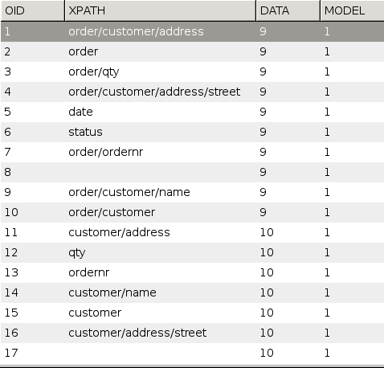
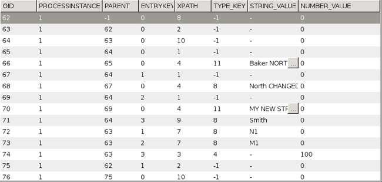

Process data of structured type are stored in the tables in the Stardust Audit Trail Database. The storage layout is optimized for efficient access in queries.
Based on the Structured Data Definition created using the modeler, possible XPath expressions are identified and written to structured_data-table during deployment.

Structured data values are stored in the structured_data_value-table. The column PROCESSINSTANCE (1 in this case) references the corresponding process instance the process_instance table. Data definition is indirectly referenced by the column XPATH.

If structured data is nullified then STRING_VALUE and NUMBER_VALUE column values are set to NULL and 0, respectively. In case of date, it is set to 0.
The following table list how null values are saved in STRUCTURED_DATA_VALUE and CLOB table of the Audit trail database.
| Passing Value | String_value | Number_Value |
|---|---|---|
| Null | Null | 0 |
| Empty String | Empty String | |
| new HashMap(string, object) | Null | 0 |
| Collections.emptyMap() | Null | 0 |
| Collections.EMPTY_MAP | Null | 0 |